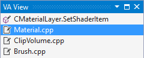
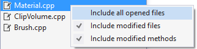

Most Recently Used List
Navigate among recently modified methods and files by selecting them from the MRU—a component of the VA View tool window.

By default, content of the MRU originates from the Open File in Solution (Shift+Alt+O) and Find Symbol in Solution (Shift+Alt+S) dialogs. Open the context menu in the MRU to change its content. C# developers with multiple methods per file typically include modified methods.

Learn more.